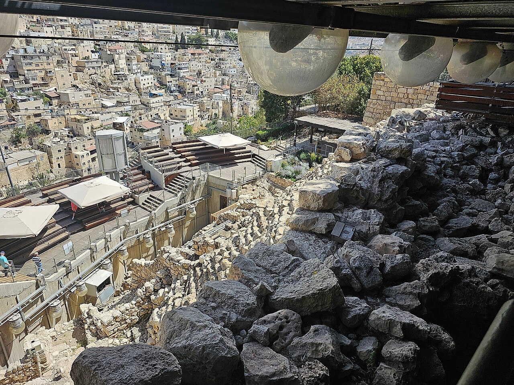

Large Stone Structure (City of David)

A monumental Iron Age building in the City of David, excavated by Eilat Mazar from 2005: massive stone walls, a large hall, and fine masonry on the ridge above the Kidron Valley. Mazar identified it as the palace of King David; other archaeologists date parts of it later and dispute the identification, while all agree it was a major public building of the early monarchy.
Biblical Significance
2 Samuel says David captured Jerusalem, built up the city around, and raised a palace of cedar. Whether these exact walls are that palace or a later king's, they prove Jerusalem in the tenth century was no village — it was a capital with monumental architecture, ruled by a king strong enough to build in stone.
Interpretations
Scholars are divided: Mazar dates the structure to the tenth century and calls it David’s palace, while others date it to the ninth century or later and reject the palace identification — it should not be presented as proof of David’s palace.